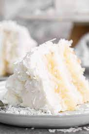

My Favorite Recipe
Coconut Cake
Ingredients
- Cake flour
- Egg whites
- Sour cream
- Coconut Extract
- Canned Coconut Milk
Instructions
- Preheat oven to 350°F (177°C). Grease three 9-inch cake pans, line with parchment paper rounds, then grease the parchment paper. Parchment paper helps the cakes seamlessly release from the pans. (If it’s helpful, see this parchment paper rounds for cakes video & post.)
- Make the cake: Whisk the cake flour, baking powder, baking soda, and salt together. Set aside.
- Using a handheld or stand mixer fitted with a paddle or whisk attachment, beat the butter and sugar together on medium-high speed until smooth and creamy, about 2 minutes. Scrape down the sides and up the bottom of the bowl with a rubber spatula as needed. Beat in the egg whites until combined, then add the sour cream, vanilla extract, and coconut extract. Beat until combined. Mixture will look curdled as a result of the varying textures and solid butter combining. Scrape down the sides and up the bottom of the bowl as needed. With the mixer on low speed, slowly add the dry ingredients and coconut milk. Beat on low speed until combined, then add the shredded coconut. Whisk it all by hand to make sure there are no butter lumps at the bottom of the bowl. The batter will be slightly thick.
- Pour batter evenly into cake pans. Weigh them to ensure accuracy, if desired. Bake for 21–23 minutes or until the cakes are baked through. To test for doneness, insert a toothpick into the center of the cake. If it comes out clean, it’s done. Allow cakes to cool completely in the pans set on a wire rack. The cakes must be completely cool before frosting and assembling.
- >Make the frosting: In a large bowl using a handheld or stand mixer fitted with a whisk or paddle attachment, beat the butter and cream cheese together on medium speed until creamy and smooth, about 2 minutes. Add confectioners’ sugar, coconut milk, vanilla extract, coconut extract, and salt with the mixer running on low. Increase to high speed and beat for 3 minutes. Add more confectioners’ sugar if frosting is too thin, more coconut milk if frosting is too thick, or an extra pinch of salt if frosting is too sweet.
- Assemble and decorate: Using a large serrated knife, slice a thin layer off the tops of the cakes to create a flat surface. Discard (or crumble over ice cream!). Place 1 cake layer on your cake stand, cake turntable, or serving plate. Evenly cover the top with about 1 and 1/2 cups of frosting. Top with second cake layer and evenly cover the top with about 1 and 1/2 cups of frosting. Top with the third cake layer. Spread the remaining frosting all over the top and sides. I use and recommend an icing spatula to apply the frosting and a bench scraper to smooth the sides. Sprinkle coconut on top of the cake and apply it to the sides. This can get a little messy and you can watch me do it in the video tutorial. See blog post above about buttercream rose decoration..Refrigerate cake for at least 20 minutes before slicing. This helps the cake hold its shape when cutting, though it’s still a pretty fluffy cake!
- .Cover leftover cake tightly and store in the refrigerator for up to 5 days.
